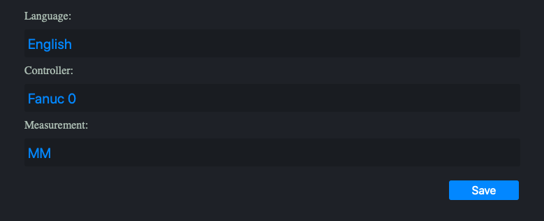
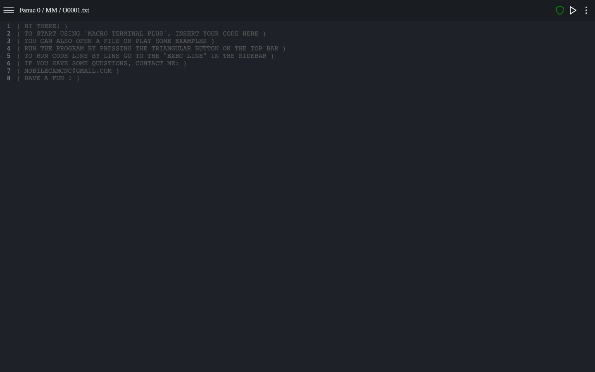
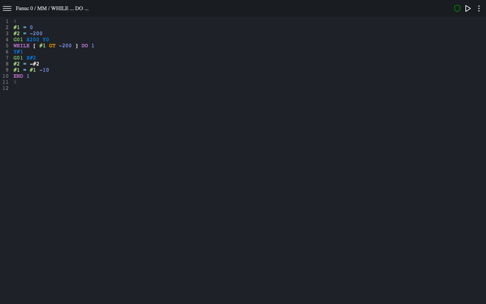
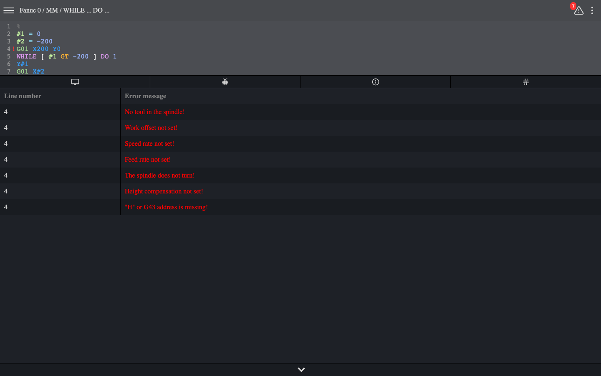
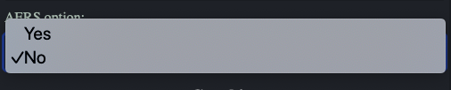
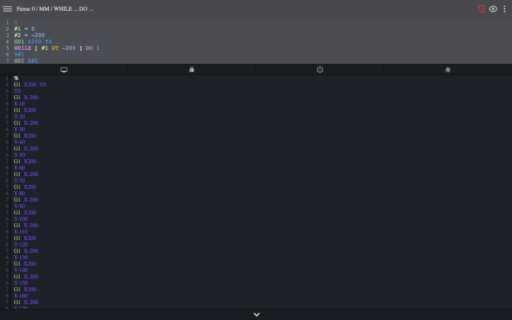

Quick start
Pre-settings
Choose your preferred language, control which one you want to work with and the measurement system (mm/inch).
Code editor
After saving your presets, you should see an editor window with a welcome text. To use it, you can paste your code, open a file, use one of the examples or simply write a cnc program yourself. In this case, we will use one of the built-in code examples.
Code execution
As you can see in the attached picture, the code is automatically colored and formatted to increase the readability of the information it contains.
To execute the code, press the triangular button in the upper right corner. See the picture above.
In the screenshot above, you can see what happens after the code is executed. As you can see, a lot of bugs have emerged. This is due to the fact that the example program used does not have such information about the tool used and other important information, without which the tool can hit the milling table or the workpiece. But if you are writing code only for learning macros or writing a subroutine and therefore your code does not contain information such as the tool number or other information that is usually entered at the beginning of the main program, you can disable AERS by using the switch in the settings (see image below).
If you are writing code only for learning macros or writing a subroutine and therefore your code does not contain information such as the tool number or other information that is usually entered at the beginning of the main program, you can disable AERS by using the switch in the settings (see image above).
As you can see now, the program ran without any error messages. However, remember to always use AERS turned on, your program is to be used in practice.